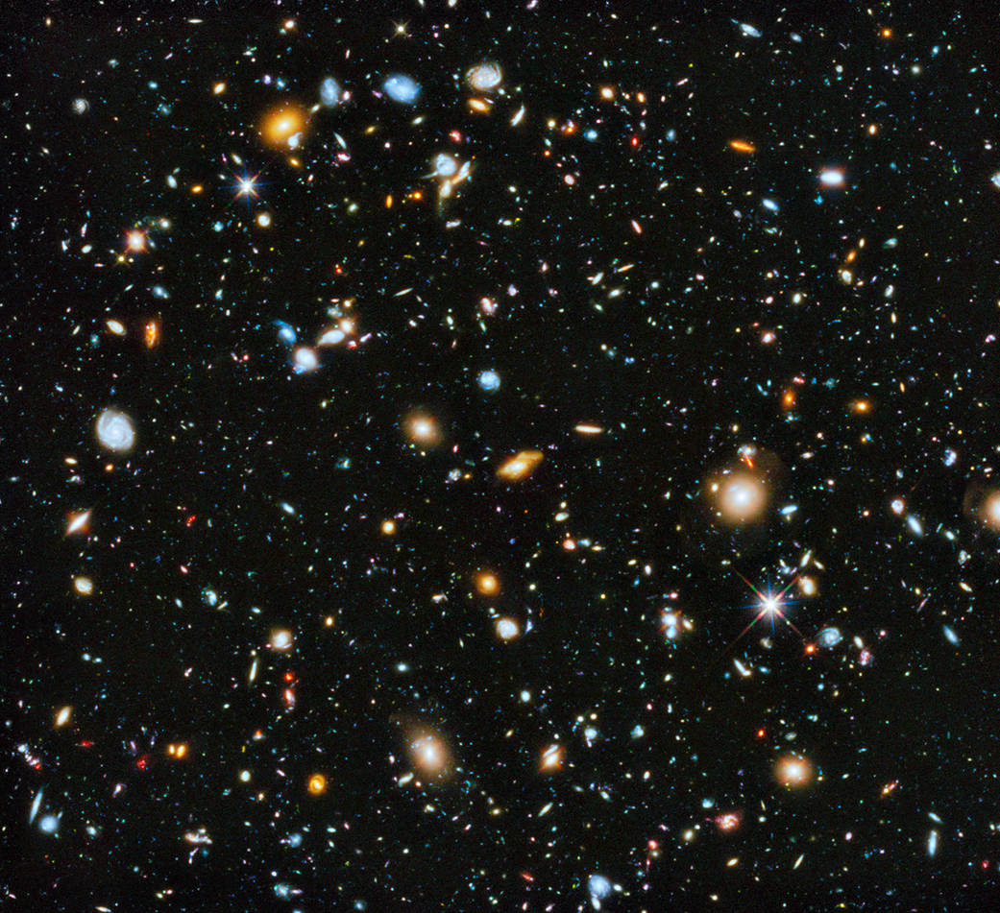

NASA is awesome!

The National Aeronautics and Space Administration (NASA) is an independent agency of the U.S. federal government responsible for the civilian space program, as well as aeronautics and space research.
NASA was established in 1958, succeeding the National Advisory Committee for Aeronautics (NACA). The new agency was to have a distinctly civilian orientation, encouraging peaceful applications in space science. Since its establishment, most US space exploration efforts have been led by NASA, including the Apollo Moon landing missions, the Skylab space station, and later the Space Shuttle. NASA is supporting the International Space Station and is overseeing the development of the Orion spacecraft, the Space Launch System, Commercial Crew vehicles, and the planned Lunar Gateway space station. The agency is also responsible for the Launch Services Program, which provides oversight of launch operations and countdown management for uncrewed NASA launches.
NASA's science is focused on better understanding Earth through the Earth Observing System; advancing heliophysics through the efforts of the Science Mission Directorate's Heliophysics Research Program; exploring bodies throughout the Solar System with advanced robotic spacecraft such as New Horizons; and researching astrophysics topics, such as the Big Bang, through the Great Observatories and associated programs.